Introduction to Python, Part V: Plotting with Matplotlib#
In Part IV we covered NumPy: arrays and fast, vectorized math. In this notebook we make that math visible. We’ll cover Matplotlib, the standard plotting library for Python, and its pyplot interface. Topics: the anatomy of a figure, basic 2D plots, multi-panel figures with plt.subplots, density/contour plots, choosing colors and colormaps, 3D plots, quick interactive/HTML plots, and animated GIFs.
Each section starts with a short explanation, followed by a code cell you can run and experiment with. Try changing values in the code cells, that’s the best way to learn!
Note: this notebook covers the fundamentals, but for the full details on plotting with Matplotlib, including its complete terminology and every option available, see the official Quick start guide. It’s the best single reference to come back to once you’re past the basics here.
Installing and Importing Matplotlib#
Like NumPy, Matplotlib is a third-party package. From a terminal:
pip install matplotlib
or, inside a notebook cell:
%pip install matplotlib
The standard import brings in the pyplot module under the alias plt (just like numpy is imported as np):
# %pip install matplotlib ipympl mpld3 # these are the packages needed for interactive plotting in this Jupyter notebook
# uncomment the following line to install matplotlib if it is not already installed in your environment
# %pip install matplotlib
import numpy as np # We'll keep using NumPy to generate the data we plot
import matplotlib.pyplot as plt # The standard convention: import pyplot under the alias plt
print(plt.matplotlib.__version__) # Print the installed version of matplotlib
3.11.2
By default, when you call plt.show() (or, in a Jupyter notebook, simply let a plotting command be the last line in a cell) the figure is drawn inline, right below the cell. Some notebook setups need one extra line to guarantee this:
%matplotlib inline
This is usually the default in Jupyter already, but it doesn’t hurt to be explicit about it.
%matplotlib inline
The Anatomy of a Figure#
Before making plots, it helps to know the vocabulary Matplotlib uses for the pieces of a plot (this mirrors the well-known “Anatomy of a Figure” diagram from the official Matplotlib documentation, see Quick start guide):
Figure: the whole window or page everything is drawn on. Created with
plt.figure()orfig, ax = plt.subplots(). A figure can hold one or more Axes.Axes: a single plot inside the figure, i.e., the region bounded by the data area (despite the confusing name, one
Axesis one subplot, not to be confused with the plural of “axis”). Has its own x-axis and y-axis.Axis: one of the number-lines bounding an Axes (
ax.xaxis,ax.yaxis). Each Axis has major/minor ticks, tick labels, and an axis label (ax.set_xlabel,ax.set_ylabel).Title: text above the Axes, set with
ax.set_title().Line / Markers: the plotted data itself, drawn with
ax.plot()(lines) orax.scatter()(markers).Legend: a key mapping colors/styles to labels, added with
ax.legend().Grid: light reference lines behind the data, toggled with
ax.grid().Spines: the four lines forming the border of the Axes (
ax.spines['top'],['right'],['bottom'],['left']).
The official Matplotlib documentation ships an actual diagram covering exactly this vocabulary. Rather than redrawing an imitation of it in code, here is that reference image directly, worth keeping open in a tab while you work through the rest of this notebook:
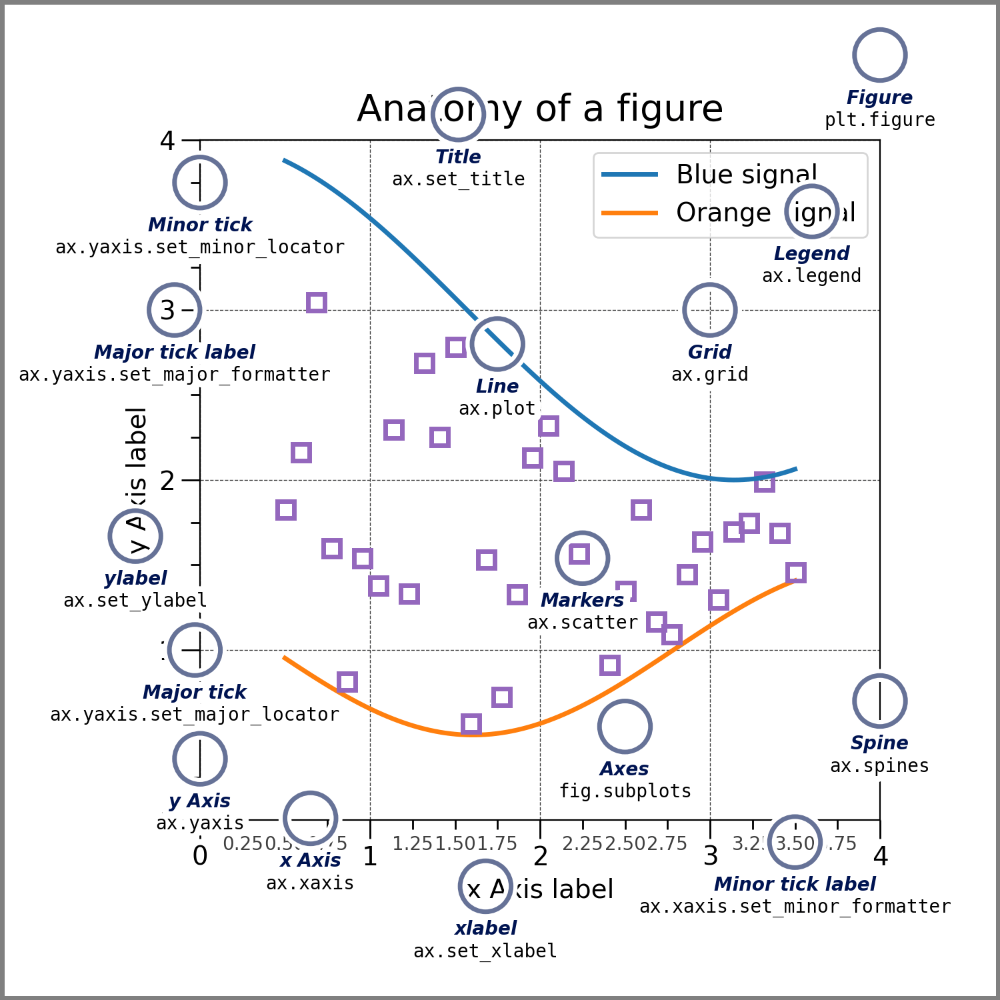
Making a Basic Plot: fig, ax = plt.subplots()#
Matplotlib actually offers two interfaces:
The pyplot (state-based) interface: quick one-liners like
plt.plot(x, y),plt.title(...). Matplotlib keeps track of “the current figure/axes” behind the scenes for you.The object-oriented (OO) interface: you explicitly create a
Figureand one or moreAxesobjects, and call methods on them:ax.plot(x, y),ax.set_title(...).
The pyplot interface is convenient for a single, throwaway plot in an interactive session. The OO interface is the recommended approach for anything else, including multi-panel figures, because it’s explicit about which Axes you’re drawing on. We’ll use the OO interface throughout this notebook. The general pattern:
fig, ax = plt.subplots() # Create one Figure containing one Axes
ax.plot(x, y) # Draw on that Axes
plt.show() # Render the figure
x = np.linspace(0, 2 * np.pi, 100) # 100 x values from 0 to 2*pi
y = np.sin(x) # y = sin(x) at each of those points
fig, ax = plt.subplots() # Create a Figure and a single Axes inside it
ax.plot(x, y) # Plot y vs. x as a line on that Axes
ax.set_title("A basic line plot") # Even a first plot should say what it shows
ax.set_xlabel("x") # and what its axes represent
ax.set_ylabel("sin(x)")
plt.show() # Render the figure
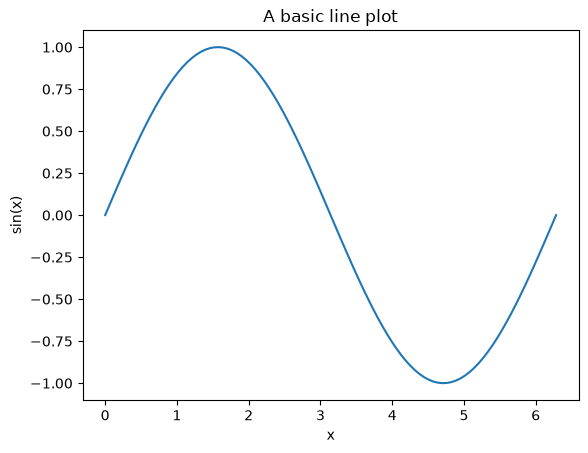
Compare the same plot using the pyplot (state-based) shortcut, plt.plot(...) directly, with no explicit fig, ax. It looks almost identical for one simple plot, but there’s no named ax to refer back to, which becomes limiting the moment you want more than one panel:
plt.plot(x, y) # pyplot draws on "whatever the current axes is", creating one if needed
plt.show()
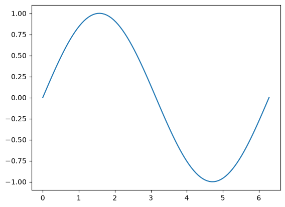
Customizing a Plot#
Common customizations, all done through keyword arguments to ax.plot() or through methods on ax:
What |
How |
|---|---|
Color |
|
Line style |
|
Line width |
|
Markers |
|
Label (for legend) |
|
Title |
|
Axis labels |
|
Axis limits |
|
Grid |
|
A shorthand string like "ro--" combines color (r=red), marker (o=circle) and linestyle (--=dashed) in one argument.
fig, ax = plt.subplots(figsize=(6, 4)) # A slightly wider figure
ax.plot(x, np.sin(x), color="tab:blue", linewidth=2, label="sin(x)") # Solid blue line
ax.plot(x, np.cos(x), "r--", linewidth=2, label="cos(x)") # Shorthand: red dashed line
ax.plot(x[::10], np.sin(x[::10]) * 0.5, "gs", markersize=6, label="0.5 sin(x)") # Shorthand: green squares, no line
ax.set_title("Customizing a plot") # Title
ax.set_xlabel("x") # x-axis label
ax.set_ylabel("y") # y-axis label
ax.set_xlim(0, 2 * np.pi) # Restrict the x-axis to exactly the data range
ax.grid(True, alpha=0.3) # A subtle grid
ax.legend() # Show the legend using each plot's "label"
plt.show()
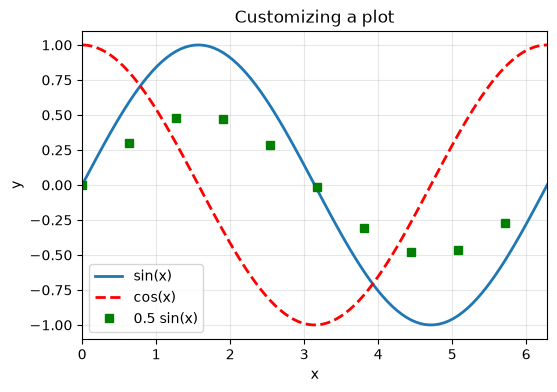
Using LaTeX in Labels and Titles#
Any string passed to ax.set_title(), ax.set_xlabel(), ax.set_ylabel(), or a legend label can contain math typeset with LaTeX syntax.
Mathtext (built in, no setup required). Wrap the math in dollar signs inside a raw string, e.g. r"$\sin(x^2)$". Matplotlib parses a useful subset of LaTeX math syntax itself (superscripts, subscripts, Greek letters, fractions, summations) and renders it with its own fonts, with no external software needed. This is what we’ve already been using for labels like r"$f(x) = \sin(x^2)$" earlier in this notebook, and it’s the right choice almost all the time.
The general rule: reach for plain mathtext ($...$ in a raw string) unless you specifically need a LaTeX package or exact document-matching fonts, in which case turn on text.usetex.
fig, ax = plt.subplots(figsize=(6, 4))
x_latex = np.linspace(0.1, 10, 200)
ax.plot(x_latex, np.log(x_latex), color="tab:blue")
# Mathtext: works everywhere, no LaTeX installation needed. Note the leading r for a raw string,
# so that backslashes like \ln are passed through to Matplotlib's math parser untouched.
ax.set_title(r"Mathtext example: $y = \ln(x)$")
ax.set_xlabel(r"$x$")
ax.set_ylabel(r"$y = \ln(x)$")
plt.show()
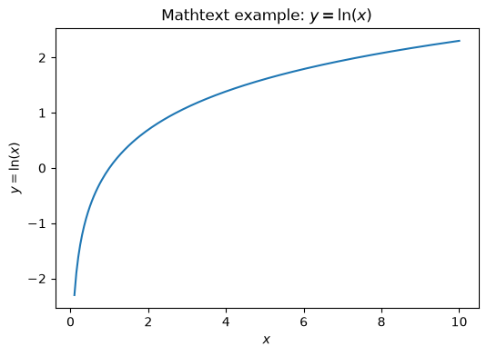
Multiple Panels with plt.subplots#
So far we’ve called plt.subplots() with no arguments, which gives one Figure with one Axes. Its general form is:
fig, axs = plt.subplots(nrows=1, ncols=1, figsize=None, sharex=False, sharey=False)
nrows,ncols: how many rows and columns of panels to lay out in a grid.figsize:(width, height)in inches for the whole figure.sharex,sharey: ifTrue, all panels share the same x-axis (or y-axis) limits and ticks, useful for fair visual comparison across panels.
When nrows * ncols > 1, the second return value axs is a NumPy array of Axes objects instead of a single Axes. If your grid is 1D (either nrows=1 or ncols=1), index it like axs[i]; if it’s 2D, index it like axs[row, col]. A common trick is to call .flatten() on a 2D grid of axes so you can loop over every panel with a single for loop, regardless of the grid’s shape.
x = np.linspace(0, 2 * np.pi, 200)
fig, axs = plt.subplots(nrows=1, ncols=2, figsize=(10, 4), sharey=True) # 1 row, 2 columns, sharing the y-axis
axs[0].plot(x, np.sin(x), color="tab:blue") # Draw on the LEFT panel
axs[0].set_title("sin(x)")
axs[0].set_xlabel("x")
axs[0].set_ylabel("y")
axs[1].plot(x, np.cos(x), color="tab:orange") # Draw on the RIGHT panel
axs[1].set_title("cos(x)")
axs[1].set_xlabel("x")
fig.suptitle("Two panels, sharing the y-axis") # A single title spanning the whole figure
plt.tight_layout() # Adjust spacing so labels don't overlap
plt.show()
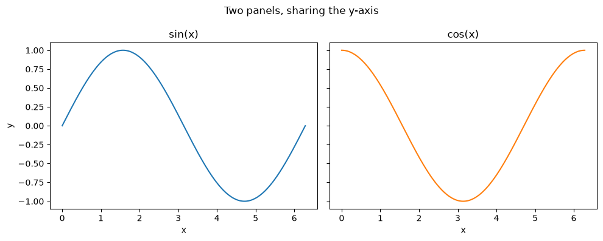
A 2x2 grid works the same way, but axs is now 2-dimensional. Here we loop over a 2x2 grid of Axes with axs.flatten() and a list of (function, name) pairs, plotting one function per panel:
fig, axs = plt.subplots(nrows=2, ncols=2, figsize=(9, 7)) # A 2x2 grid: 4 panels total
functions = [
(np.sin, "sin(x)"),
(np.cos, "cos(x)"),
(np.tan, "tan(x)"),
(np.exp, "exp(x)"),
]
for ax, (func, name) in zip(axs.flatten(), functions): # axs.flatten() turns the 2x2 grid into a flat list of 4 Axes
ax.plot(x, func(x), color="tab:green")
ax.set_title(name)
ax.set_xlabel("x") # Every panel gets its own axis labels, even in a grid
ax.set_ylabel(name)
ax.grid(True, alpha=0.3)
if functions[2][0] is np.tan: # tan(x) blows up near pi/2; clip the y-axis so the plot stays readable
axs.flatten()[2].set_ylim(-10, 10)
fig.suptitle("A 2x2 grid of panels", fontsize=14)
plt.tight_layout()
plt.show()
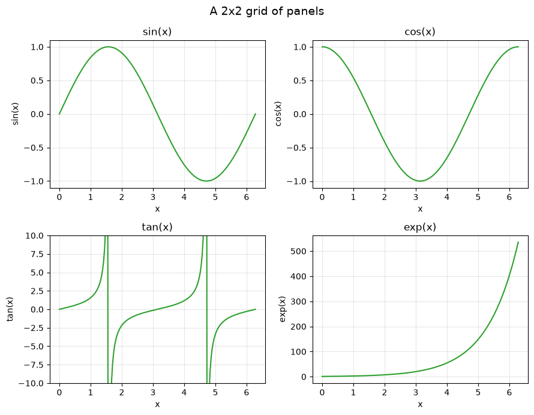
Density Plots and Contour Plots#
So far every plot has taken a 1D array of x-values and a 1D array of y-values. To visualize a function of two variables, \(z = f(x, y)\), we need a grid of \((x, y)\) points and the value of \(z\) at each one. NumPy’s np.meshgrid builds that grid for us:
X, Y = np.meshgrid(x, y)
Given a 1D array x of length \(m\) and a 1D array y of length \(n\), np.meshgrid returns two 2D arrays X and Y, each of shape (n, m), such that X[i, j] = x[j] and Y[i, j] = y[i]. In other words, (X[i, j], Y[i, j]) is one point on the grid. You can then evaluate any function of X and Y elementwise (thanks to NumPy’s vectorization from Part IV) to get a matrix Z of values, one per grid point.
With X, Y, and Z in hand, there are three common ways to visualize the surface \(z = f(x, y)\):
ax.contour(X, Y, Z): draws contour lines (curves of constant \(z\)), like a topographic map.ax.contourf(X, Y, Z): same idea, but filled with color between contour lines, this is the classic “density plot” look.ax.imshow(Z)orax.pcolormesh(X, Y, Z): colors every grid cell directly according to itsZvalue, without computing contour lines at all. This is the fastest option and works well for noisy or high-resolution data.
Add a colorbar with fig.colorbar(...) so the reader can read numeric z values off the color.
x = np.linspace(-3, 3, 200) # 200 x-values from -3 to 3
y = np.linspace(-3, 3, 200) # 200 y-values from -3 to 3
X, Y = np.meshgrid(x, y) # X and Y are now both 200x200 grids of coordinates
Z = np.exp(-(X**2 + Y**2)) + 0.5 * np.exp(-((X - 1.5)**2 + (Y - 1.5)**2) / 0.3) # A "bump" function: two overlapping Gaussians
fig, axs = plt.subplots(1, 3, figsize=(15, 4.5))
cf = axs[0].contourf(X, Y, Z, levels=20, cmap="viridis") # Filled contour ("density") plot, 20 shades
fig.colorbar(cf, ax=axs[0])
axs[0].set_title("ax.contourf (filled)")
cl = axs[1].contour(X, Y, Z, levels=10, cmap="viridis") # Contour LINES only
axs[1].clabel(cl, inline=True, fontsize=8) # Label a few contour lines with their z value
axs[1].set_title("ax.contour (lines)")
im = axs[2].imshow(Z, extent=[-3, 3, -3, 3], origin="lower", cmap="viridis") # Raw grid of colored cells
fig.colorbar(im, ax=axs[2])
axs[2].set_title("ax.imshow")
for ax in axs:
ax.set_xlabel("x")
ax.set_ylabel("y")
plt.tight_layout()
plt.show()
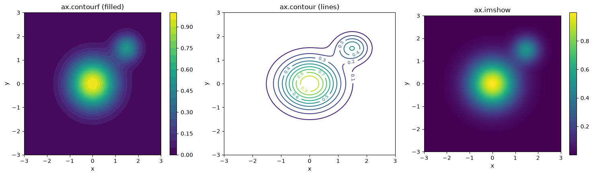
ax.contourf/ax.contour/ax.imshow all visualize a function you already have a formula for. A closely related but different task is visualizing where a cloud of scattered data points is dense versus sparse; ax.hist2d(x, y) bins the points into a 2D grid of rectangles and colors each rectangle by how many points fell inside it, essentially a 2D histogram:
rng = np.random.default_rng(0) # A seeded random number generator, for reproducibility
pts_x = rng.normal(loc=0, scale=1, size=5000) # 5000 random x-values from a normal distribution
pts_y = rng.normal(loc=0, scale=1, size=5000) # 5000 random y-values from a normal distribution
fig, ax = plt.subplots(figsize=(5.5, 5))
h = ax.hist2d(pts_x, pts_y, bins=40, cmap="magma") # 2D histogram: 40x40 bins, colored by point count per bin
fig.colorbar(h[3], ax=ax, label="count") # h[3] is the QuadMesh object hist2d returns; used here to build the colorbar
ax.set_title("ax.hist2d: density of scattered points")
ax.set_xlabel("x")
ax.set_ylabel("y")
plt.show()
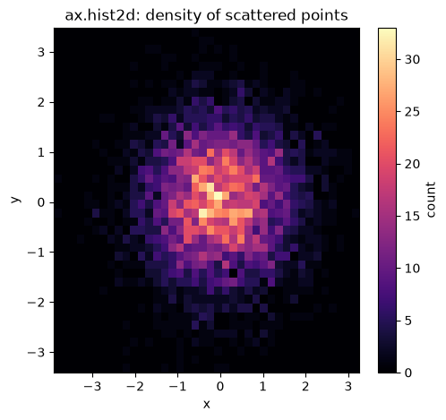
Choosing Colors and Colormaps#
Two different situations call for two different kinds of color choices in Matplotlib:
A single color per line/marker (e.g.
color="tab:blue"). Matplotlib accepts named colors ("red","tab:blue"), hex codes ("#1f77b4"), or the"tab:..."palette (tab:blue,tab:orange,tab:green,tab:red,tab:purple, …), which is the default cycle used automatically when you don’t specify a color at all.A colormap (
cmap=...), used whenever color itself encodes a continuous numeric value, like theZheights in the contour plots above. Picking the right colormap is important: the wrong one can visually distort your data or make it unreadable to colorblind viewers. Following Matplotlib’s own colormap guide, colormaps fall into a few families:
Family |
Use for |
Examples |
|---|---|---|
Sequential |
Data that goes from low to high, with no natural “zero” (density, elevation, counts) |
|
Diverging |
Data with a meaningful midpoint that values deviate from in two directions (e.g. temperature anomaly, profit/loss) |
|
Qualitative |
Categorical data with no inherent order (different groups/classes) |
|
Cyclic |
Data that wraps around (angles, phase, time of day) |
|
viridis is Matplotlib’s default colormap, and for good reason: it’s perceptually uniform (equal steps in data look like equal steps in color) and remains readable if printed in grayscale or viewed by someone with red-green colorblindness. Rainbow-style maps like the old default jet are visually striking but can create false visual boundaries in the data and are generally discouraged today.
The code below previews one colormap from each family, and shows the default color cycle used for lines.
fig, axs = plt.subplots(2, 2, figsize=(10, 6))
gradient = np.linspace(0, 1, 256).reshape(1, -1) # A single row of 256 values from 0 to 1, used just to preview a colormap
for ax, cmap_name, family in zip(
axs.flatten(),
["viridis", "coolwarm", "tab10", "twilight"],
["Sequential", "Diverging", "Qualitative", "Cyclic"],
):
ax.imshow(gradient, aspect="auto", cmap=cmap_name) # Stretch the gradient across the panel, colored by cmap_name
ax.set_title(f"{family}: '{cmap_name}'")
ax.set_xlabel("low value" + " " * 20 + "high value") # Describe the strip in words instead of meaningless tick numbers
ax.set_xticks([]) # The actual pixel-column numbers aren't meaningful, only the direction of the gradient is
ax.set_yticks([]) # This is just a color strip, a y-axis would be meaningless
plt.tight_layout()
plt.show()
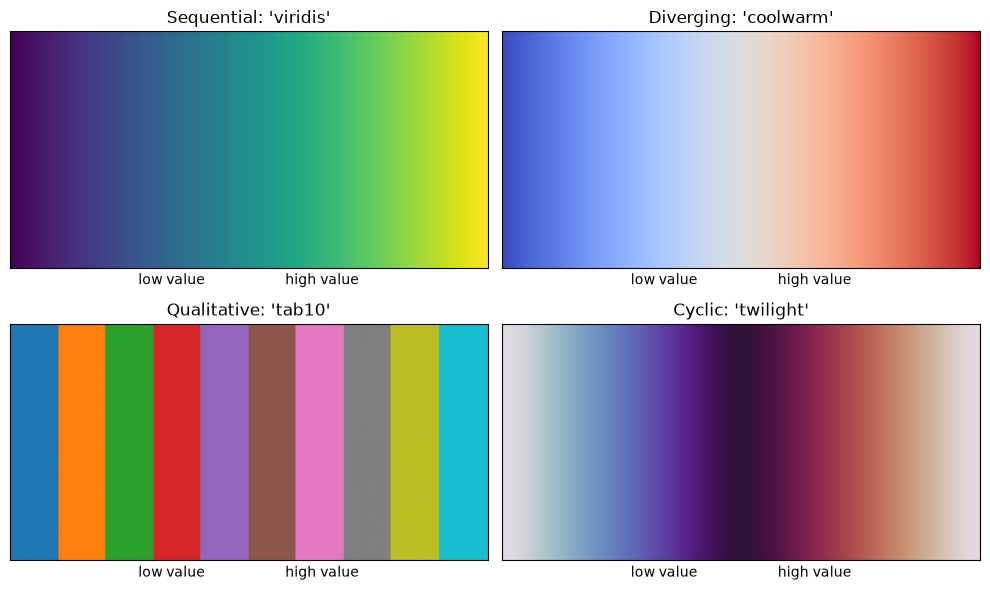
fig, ax = plt.subplots(figsize=(6, 4))
for i in range(6): # Draw 6 lines with NO color specified
ax.plot(x, np.sin(x) + i * 0.5, label=f"shift={i * 0.5}") # Matplotlib cycles through tab10 automatically
ax.set_title("Default color cycle (no `color=` given)")
ax.set_xlabel("x")
ax.set_ylabel("sin(x) + shift")
ax.legend(fontsize=8, ncol=2)
plt.show()
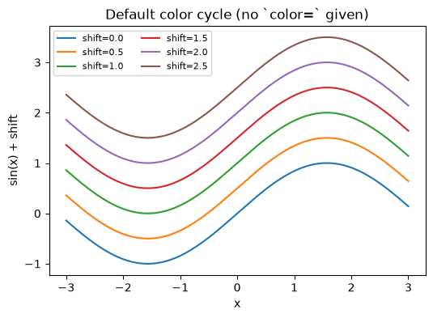
When your colormap represents a diverging quantity (values above and below some meaningful center, often 0), it’s important that the center of the colormap lines up with that meaningful value, not just with the midpoint of your data’s min and max. matplotlib.colors.TwoSlopeNorm (or the simpler CenteredNorm) handles this for you:
from matplotlib.colors import TwoSlopeNorm
temp_anomaly = np.array([-2, -1, -0.5, 0.2, 1, 3, 5]) # Mostly small negative values, one large positive outlier
x_labels = np.arange(len(temp_anomaly))
fig, axs = plt.subplots(1, 2, figsize=(11, 3.2))
norm_bad = plt.Normalize(vmin=temp_anomaly.min(), vmax=temp_anomaly.max()) # Naive min/max normalization: center is NOT at 0
sc0 = axs[0].scatter(x_labels, [0] * len(temp_anomaly), c=temp_anomaly, cmap="coolwarm", norm=norm_bad, s=800, marker="s")
fig.colorbar(sc0, ax=axs[0])
axs[0].set_title("Without TwoSlopeNorm:\ncenter is NOT at 0")
norm_good = TwoSlopeNorm(vmin=temp_anomaly.min(), vcenter=0, vmax=temp_anomaly.max()) # Force white/center at 0
sc1 = axs[1].scatter(x_labels, [0] * len(temp_anomaly), c=temp_anomaly, cmap="coolwarm", norm=norm_good, s=800, marker="s")
fig.colorbar(sc1, ax=axs[1])
axs[1].set_title("With TwoSlopeNorm(vcenter=0):\ncenter IS at 0")
for ax in axs:
ax.set_yticks([])
plt.tight_layout()
plt.show()
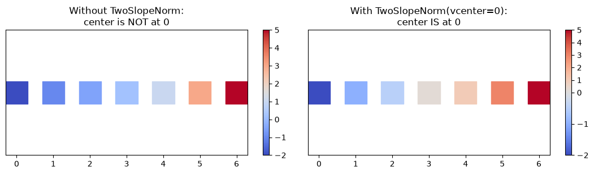
3D Plots#
Matplotlib’s mplot3d toolkit adds a third dimension to Axes. You get a 3D Axes by passing projection="3d" to add_subplot (or to plt.subplots(subplot_kw={"projection": "3d"})). Once you have a 3D Axes, three plotting calls cover most needs:
ax.plot3D(x, y, z): a 3D line/curve, given three 1D arrays.ax.scatter3D(x, y, z): a 3D scatter plot of points.ax.plot_surface(X, Y, Z): a full surface, given the same kind ofX, Y, Zmeshgrid we built for contour plots.
3D plots are genuinely interactive when running with an interactive backend (drag to rotate); in a static notebook export you can still set a fixed viewing angle with ax.view_init(elev=..., azim=...).
from mpl_toolkits.mplot3d import Axes3D # Registers the '3d' projection with matplotlib
fig = plt.figure(figsize=(13, 5))
# --- Panel 1: a 3D curve (a helix) ---
ax1 = fig.add_subplot(1, 3, 1, projection="3d")
t = np.linspace(0, 6 * np.pi, 300)
ax1.plot3D(np.cos(t), np.sin(t), t, color="tab:blue") # x=cos(t), y=sin(t), z=t traces a helix
ax1.set_title("ax.plot3D: a helix")
ax1.set_xlabel("x")
ax1.set_ylabel("y")
ax1.set_zlabel("z")
# --- Panel 2: a 3D scatter ---
ax2 = fig.add_subplot(1, 3, 2, projection="3d")
rng = np.random.default_rng(1)
xs, ys, zs = rng.normal(size=(3, 200)) # 200 random points in 3D
sca = ax2.scatter3D(xs, ys, zs, c=zs, cmap="viridis") # Color each point by its z value
ax2.set_title("ax.scatter3D")
ax2.set_xlabel("x")
ax2.set_ylabel("y")
ax2.set_zlabel("z")
fig.colorbar(sca, ax=ax2, shrink=0.6, label="z value") # Since color is redundant with z here, label what it means
# --- Panel 3: a surface, reusing the meshgrid idea from the contour section ---
ax3 = fig.add_subplot(1, 3, 3, projection="3d")
x2 = np.linspace(-3, 3, 60)
y2 = np.linspace(-3, 3, 60)
X2, Y2 = np.meshgrid(x2, y2)
Z2 = np.sin(np.sqrt(X2**2 + Y2**2)) # A "ripple" function
ax3.plot_surface(X2, Y2, Z2, cmap="plasma")
ax3.set_title("ax.plot_surface")
ax3.set_xlabel("x")
ax3.set_ylabel("y")
ax3.set_zlabel("z")
ax3.view_init(elev=30, azim=-60) # Fix the viewing angle for a static export
plt.tight_layout()
plt.show()
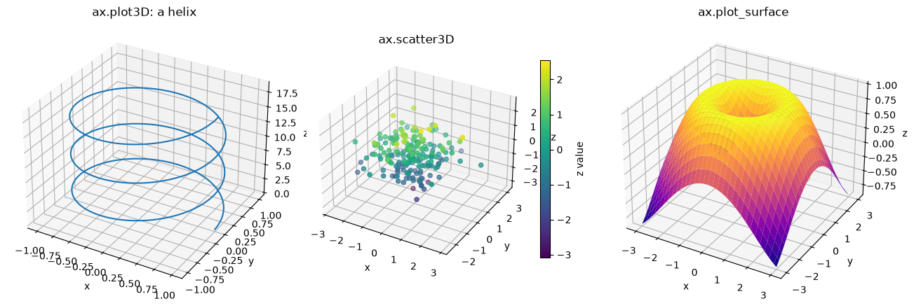
Interactive and HTML Plots#
Everything so far has produced a static image. Two easy ways to get interactivity, especially useful for 3D plots and plots with a lot of detail to zoom into:
1. An interactive backend, inside a notebook. Running the magic command
%matplotlib widget
(requires %pip install ipympl once) switches Matplotlib into a mode where every figure is a live, zoomable/pannable/rotatable widget embedded in the notebook, instead of a static image. This is the quickest way to interactively spin a 3D plot around.
2. A standalone interactive HTML file, that you can email or open in any browser without Python installed, using the third-party package mpld3 (%pip install mpld3). It converts a Matplotlib figure into an HTML page with pan/zoom powered by D3.js:
import mpld3
mpld3.save_html(fig, "my_plot.html") # Writes a standalone, interactive HTML file
The code below builds a plot and exports it to HTML this way (this cell will raise an ImportError with a helpful message if mpld3 isn’t installed, since it’s an optional extra rather than a core dependency).
fig, ax = plt.subplots(figsize=(6, 4))
ax.plot(x, np.sin(x), label="sin(x)")
ax.plot(x, np.cos(x), label="cos(x)")
ax.set_title("This figure will be exported to an interactive HTML file")
ax.set_xlabel("x")
ax.set_ylabel("y")
ax.legend()
try:
import mpld3
mpld3.save_html(fig, "interactive_plot.html") # Writes a standalone HTML file with pan/zoom
print("Saved interactive_plot.html : open it in a browser to pan and zoom!")
except ImportError:
print("mpld3 isn't installed. Run `%pip install mpld3` and re-run this cell to export an interactive HTML plot.")
plt.show()
mpld3 isn't installed. Run `%pip install mpld3` and re-run this cell to export an interactive HTML plot.
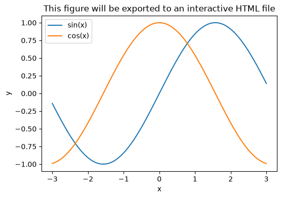
Creating Animated GIFs#
Matplotlib’s matplotlib.animation module can turn a sequence of plots into an animation, which you can then save as a .gif. The pattern has three parts:
Create a Figure and an initial, empty (or first-frame) plot, keeping a handle to the plotted object (e.g. the
Line2Dreturned byax.plot(...)).Write an update function
update(frame)that changes the data of that plotted object (e.g.line.set_data(x, new_y)) for a given frame number, and returns it.Build a
FuncAnimation(fig, update, frames=..., interval=...)and save it withanim.save("name.gif", writer=PillowWriter(fps=...)).PillowWritercomes from thePillowimage library and needs no extra installation beyondpip install pillow, which most environments already have.
interval is the delay between frames in milliseconds while animating live; fps (frames per second) controls the playback speed of the saved GIF file, they’re set independently.
from matplotlib.animation import FuncAnimation, PillowWriter
fig, ax = plt.subplots(figsize=(5, 3.5))
x_anim = np.linspace(0, 2 * np.pi, 200)
line, = ax.plot(x_anim, np.sin(x_anim), color="tab:blue") # Plot the first frame, keep a handle to the Line2D object
ax.set_ylim(-1.5, 1.5)
ax.set_title("A traveling sine wave")
ax.set_xlabel("x")
ax.set_ylabel("sin(x + phase)")
def update(frame):
phase = frame * 0.1 # How far the wave has shifted by this frame
line.set_ydata(np.sin(x_anim + phase)) # Update ONLY the y-data, x stays the same
return line, # FuncAnimation expects an iterable of updated artists
anim = FuncAnimation(fig, update, frames=60, interval=50) # 60 frames, 50ms between them while animating live
anim.save("traveling_wave.gif", writer=PillowWriter(fps=20)) # Save as a GIF, played back at 20 frames per second
plt.close(fig) # Close the static preview; the GIF file itself is what to look at
print("Saved traveling_wave.gif")
Saved traveling_wave.gif
Once saved, you can display the resulting GIF directly in a notebook cell with IPython.display.Image:
from IPython.display import Image
Image(filename="traveling_wave.gif")
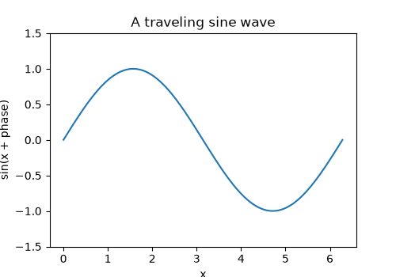
A .gif file is convenient for a notebook or a web page, but LaTeX documents cannot embed a GIF directly. If you want to embed this animation in a LaTeX document (for example with the animate package), what you need instead is the individual frames saved as a numbered sequence of image files, which \animategraphics then plays back for you. The code below reruns the same traveling-wave animation, but instead of handing it to FuncAnimation, we manually loop over every frame and call fig.savefig(...) into a folder, naming each file with a zero-padded frame number so they sort in the right order (frame_000.png, frame_001.png, and so on).
import os
frame_dir = "frames"
os.makedirs(frame_dir, exist_ok=True) # Create the output folder if it doesn't already exist
fig, ax = plt.subplots(figsize=(5, 3.5))
line, = ax.plot(x_anim, np.sin(x_anim), color="tab:blue")
ax.set_ylim(-1.5, 1.5)
ax.set_title("A traveling sine wave")
ax.set_xlabel("x")
ax.set_ylabel("sin(x + phase)")
n_frames = 60
for frame in range(n_frames):
phase = frame * 0.1
line.set_ydata(np.sin(x_anim + phase)) # Same update rule as the GIF version above
fig.savefig(f"{frame_dir}/frame_{frame:03d}.png", dpi=150) # Zero-padded to 3 digits: frame_000.png ... frame_059.png
plt.close(fig)
print(f"Saved {n_frames} frames to the '{frame_dir}/' folder")
Saved 60 frames to the 'frames/' folder
With those frames saved, embedding the animation in a LaTeX document only needs the animate package and one command pointing at the frame folder’s shared filename prefix (frames/frame_), the starting frame number, and the ending frame number:
\usepackage{animate}
...
\animategraphics[loop,autoplay,width=0.7\linewidth]{20}{frames/frame_}{000}{059}
The {20} is the playback frame rate, and it should generally match the fps you used when saving the GIF version so both play back at the same speed. Compiling that document (with pdflatex, run with the -shell-escape flag since animate needs it to find the frame files) embeds a fully interactive, scrubbable animation directly in the resulting PDF, viewable in Adobe Acrobat or any PDF reader with JavaScript support.
Practice Example 1: Plotting Two Functions#
Let’s put the basics together on two less-standard functions: \(f(x) = \sin(x^2)\) and \(g(x) = \cos\left(\frac{x^3}{3}\right) + x\), over \(x \in [-3, 3]\). Both functions oscillate increasingly quickly as \(|x|\) grows (since the argument to sin/cos is growing faster than linearly), so we need enough sample points for the curves to look smooth rather than jagged. We’ll show them both together on one panel, and then again side by side for a cleaner individual look.
x_ex1 = np.linspace(-3, 3, 1000) # 1000 points: needed for a smooth curve since sin(x^2) oscillates fast
f = np.sin(x_ex1**2) # f(x) = sin(x^2)
g = np.cos(x_ex1**3 / 3) + x_ex1 # g(x) = cos(x^3/3) + x
fig, ax = plt.subplots(figsize=(8, 5))
ax.plot(x_ex1, f, color="tab:blue", linewidth=1.5, label=r"$f(x) = \sin(x^2)$")
ax.plot(x_ex1, g, color="tab:red", linewidth=1.5, label=r"$g(x) = \cos(x^3/3) + x$")
ax.axhline(0, color="gray", linewidth=0.8, linestyle=":") # A faint reference line at y=0
ax.set_title("Two functions on one set of axes")
ax.set_xlabel("x")
ax.set_ylabel("y")
ax.legend()
ax.grid(True, alpha=0.3)
plt.show()
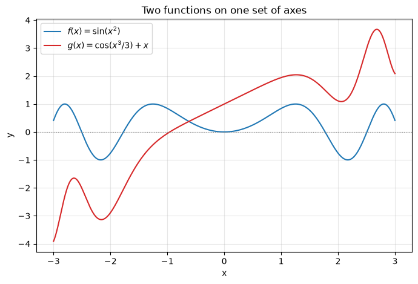
fig, axs = plt.subplots(1, 2, figsize=(12, 4.5), sharex=True) # Side by side, sharing the x-axis for easy comparison
axs[0].plot(x_ex1, f, color="tab:blue")
axs[0].set_title(r"$f(x) = \sin(x^2)$")
axs[0].set_xlabel("x")
axs[0].set_ylabel("f(x)")
axs[0].grid(True, alpha=0.3)
axs[1].plot(x_ex1, g, color="tab:red")
axs[1].set_title(r"$g(x) = \cos(x^3/3) + x$")
axs[1].set_xlabel("x")
axs[1].set_ylabel("g(x)")
axs[1].grid(True, alpha=0.3)
plt.tight_layout()
plt.show()
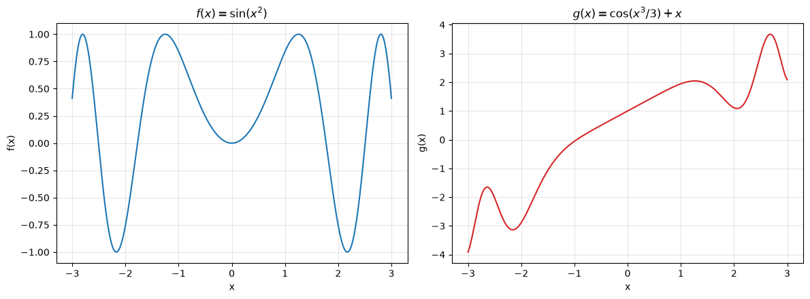
Practice Example 2: Plotting Fractals#
Following the approach in NumPy’s own Plotting Fractals tutorial, we’ll draw escape-time fractals, the family that includes the Mandelbrot set. The general recipe, for a starting value \(z_0\) and a per-pixel point \(p\) on the complex plane:
and ask: does \(|z_n|\) stay bounded forever, or does it “escape” past some radius? Points where it stays bounded (after many iterations) belong to the fractal set; points that escape are colored by how quickly they escaped, which is what produces the fractal image. Different choices of the update rule get_next and the starting value \(z_0\) produce entirely different fractals from the same underlying algorithm, so rather than writing one function tied to the Mandelbrot formula specifically, we’ll write one general helper function that takes get_next as an argument, then reuse it for several different fractals, including ones you invent yourself.
We build this entirely with vectorized NumPy operations (no nested Python loops over every pixel), reusing exactly the np.meshgrid idea from the density plots section, but this time treating the grid as complex numbers p = X + 1j * Y.
def escape_time_fractal(get_next, width, height, x_range=(-2.0, 2.0), y_range=(-2.0, 2.0),
initial_z=0j, max_iter=100, escape_radius=2.0):
# A general-purpose helper for ANY escape-time fractal.
# get_next(z, p): given the current value z and this pixel's point p on the complex plane,
# returns the next z in the sequence. This is the only piece that changes
# between different fractals, everything else below is bookkeeping.
# initial_z: the starting z for every pixel. Pass a fixed complex number (e.g. 0j) to
# start every pixel at the same place (this is what the Mandelbrot set does),
# or pass None to start each pixel's z at its OWN point p (this is what a
# Julia set does instead).
x = np.linspace(*x_range, width) # Real-axis coordinates
y = np.linspace(*y_range, height) # Imaginary-axis coordinates
X, Y = np.meshgrid(x, y) # A grid of coordinates, just like in the contour plots section
P = X + 1j * Y # Treat the grid as complex numbers p = x + iy
Z = np.full(P.shape, initial_z, dtype=complex) if initial_z is not None else P.copy() # Starting z for every pixel
escape_iter = np.full(P.shape, max_iter, dtype=int) # Assume "never escapes" (max_iter) until proven otherwise
still_active = np.ones(P.shape, dtype=bool) # Which pixels haven't escaped yet
for i in range(max_iter):
Z[still_active] = get_next(Z[still_active], P[still_active]) # Update only the pixels still in play
escaped_now = np.abs(Z) > escape_radius # Past escape_radius guarantees eventual escape to infinity
newly_escaped = escaped_now & still_active # Pixels escaping for the FIRST time on this iteration
escape_iter[newly_escaped] = i # Record how many iterations they took
still_active &= ~escaped_now # Remove them from further consideration
return escape_iter
With the helper written once, drawing the classic Mandelbrot set is just one call: get_next(z, p) = z**2 + p, starting every pixel at z = 0.
def mandelbrot_get_next(z, p):
return z**2 + p
escape_counts = escape_time_fractal(
mandelbrot_get_next, width=800, height=800,
x_range=(-2.0, 0.5), y_range=(-1.25, 1.25), max_iter=100,
)
fig, ax = plt.subplots(figsize=(7, 7))
ax.imshow(escape_counts, extent=[-2.0, 0.5, -1.25, 1.25], cmap="twilight_shifted") # Color by escape speed
ax.set_title("The Mandelbrot Set")
ax.set_xlabel("Re(p)")
ax.set_ylabel("Im(p)")
plt.show()
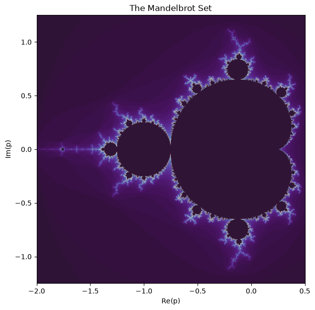
Zooming into a small region (by narrowing x_range/y_range and reusing the same helper) reveals more fine structure, one of the hallmark features of a fractal: it looks intricate no matter how far you zoom in.
zoomed = escape_time_fractal(
mandelbrot_get_next, width=800, height=800,
x_range=(-0.75, -0.73), y_range=(0.09, 0.11), # A tiny window near an interesting boundary
max_iter=300, # More iterations needed at high zoom
)
fig, ax = plt.subplots(figsize=(7, 7))
ax.imshow(zoomed, extent=[-0.75, -0.73, 0.09, 0.11], cmap="twilight_shifted")
ax.set_title("Zooming into the Mandelbrot Set")
ax.set_xlabel("Re(p)")
ax.set_ylabel("Im(p)")
plt.show()
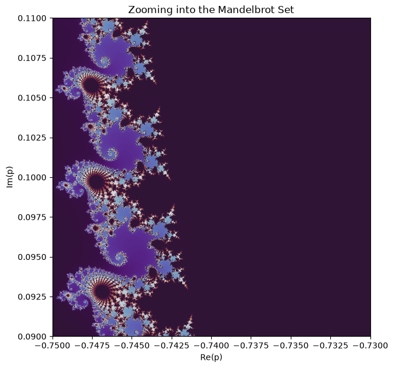
This is where the flexibility of escape_time_fractal pays off: a Julia set uses the exact same update formula, \(z_{n+1} = z_n^2 + c\), but with the roles reversed. Instead of starting every pixel at \(z_0 = 0\) and varying \(c\) across the grid, a Julia set fixes \(c\) at one constant value and starts each pixel’s \(z_0\) at its own grid point. That’s exactly what initial_z=None does in the helper above: it tells escape_time_fractal to start each pixel at its own point on the grid, and we bake the fixed c into get_next via a closure instead of passing it in as p.
c_julia = -0.8 + 0.156j # A fixed constant, chosen because it produces an interesting shape
def julia_get_next(z, p): # p is ignored entirely; c is fixed instead of coming from the grid
return z**2 + c_julia
julia_counts = escape_time_fractal(
julia_get_next, width=800, height=800,
x_range=(-1.5, 1.5), y_range=(-1.5, 1.5), max_iter=150,
initial_z=None, # Each pixel starts its OWN z at its own grid point
)
fig, ax = plt.subplots(figsize=(7, 7))
ax.imshow(julia_counts, extent=[-1.5, 1.5, -1.5, 1.5], cmap="twilight_shifted")
ax.set_title(f"A Julia Set (c = {c_julia})")
ax.set_xlabel("Re(z0)")
ax.set_ylabel("Im(z0)")
plt.show()
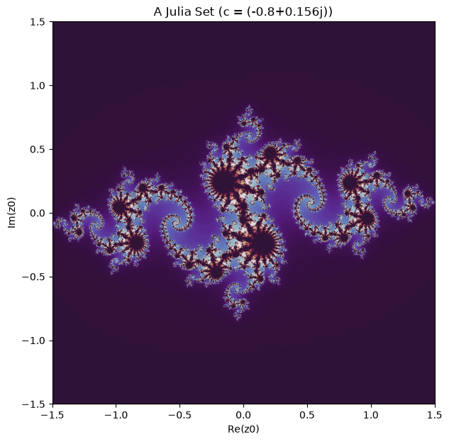
Now design one of your own. get_next can be any function of z and p, not just powers of z, try changing the exponent, adding more terms, or using a completely different formula like np.sin(z) + p. The example below swaps in a cubic update rule, \(z_{n+1} = z_n^3 + p\), to show how little needs to change:
def cubic_get_next(z, p):
return z**3 + p # Just swap the update rule; everything else is unchanged
cubic_counts = escape_time_fractal(
cubic_get_next, width=800, height=800,
x_range=(-1.5, 1.5), y_range=(-1.5, 1.5), max_iter=100,
)
fig, ax = plt.subplots(figsize=(7, 7))
ax.imshow(cubic_counts, extent=[-1.5, 1.5, -1.5, 1.5], cmap="inferno")
ax.set_title(r"A cubic fractal: $z_{n+1} = z_n^3 + p$")
ax.set_xlabel("Re(p)")
ax.set_ylabel("Im(p)")
plt.show()
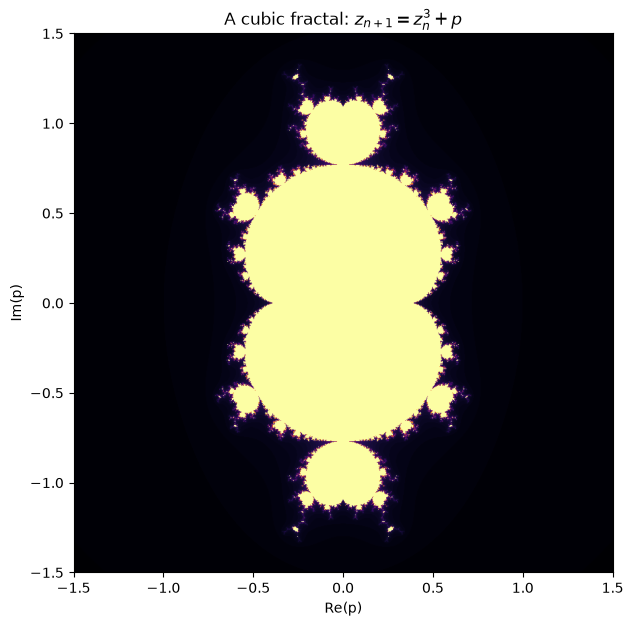
Practice Example 3: Creating Your Own GIF#
Let’s animate one of the 3D surfaces from earlier: instead of moving the data, we’ll slowly rotate the camera around a fixed surface by changing the azim (azimuth) angle passed to ax.view_init() on every frame. This reuses the exact FuncAnimation + PillowWriter pattern from before, so the only real difference is what the update function changes.
from matplotlib.animation import FuncAnimation, PillowWriter
from mpl_toolkits.mplot3d import Axes3D
x3 = np.linspace(-3, 3, 60)
y3 = np.linspace(-3, 3, 60)
X3, Y3 = np.meshgrid(x3, y3)
Z3 = np.sin(np.sqrt(X3**2 + Y3**2)) # The same "ripple" surface from the 3D plots section
fig = plt.figure(figsize=(5, 5))
ax = fig.add_subplot(projection="3d")
ax.plot_surface(X3, Y3, Z3, cmap="viridis") # The surface is drawn ONCE; we just rotate the view of it
ax.set_title("Rotating a 3D surface")
ax.set_axis_off() # Hide the axes/ticks for a cleaner-looking GIF
def update(frame):
ax.view_init(elev=30, azim=frame * 3) # Spin the camera 3 degrees further around per frame
return fig,
anim = FuncAnimation(fig, update, frames=120, interval=50) # 120 frames * 3 degrees = one full 360-degree turn
anim.save("rotating_surface.gif", writer=PillowWriter(fps=24))
plt.close(fig)
print("Saved rotating_surface.gif")
Saved rotating_surface.gif
from IPython.display import Image
Image(filename="rotating_surface.gif")
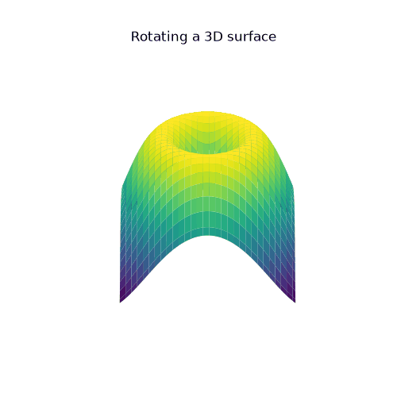
Practice Example 4: The Ikeda Map#
The Ikeda map is a discrete-time chaotic system, originally used to model the behavior of light in a ring laser cavity. Starting from a point \((x_0, y_0)\), it repeatedly applies:
where \(u\) is a fixed parameter. For \(u\) around 0.9, the orbit never settles down to a fixed point or a simple cycle; instead it wanders forever over a intricate, swirling curve called a strange attractor. Since there’s no formula for the whole attractor at once, we generate it by brute force: iterate the map many thousands of times from a single starting point, then scatter-plot every single point the orbit visited. The interesting shape only appears once you have enough points, a handful of iterations just looks like a few scattered dots.
def ikeda_map(u=0.9, n_iter=200000, x0=0.1, y0=0.1):
x = np.empty(n_iter) # Pre-allocate: much faster than growing a list one point at a time
y = np.empty(n_iter)
x[0], y[0] = x0, y0
for n in range(n_iter - 1): # Each point depends on the previous one, so this must be a loop, not vectorized
t = 0.4 - 6 / (1 + x[n]**2 + y[n]**2)
x[n + 1] = 1 + u * (x[n] * np.cos(t) - y[n] * np.sin(t))
y[n + 1] = u * (x[n] * np.sin(t) + y[n] * np.cos(t))
return x, y
x_ikeda, y_ikeda = ikeda_map(u=0.9, n_iter=200000)
fig, ax = plt.subplots(figsize=(6, 6))
ax.scatter(x_ikeda[200:], y_ikeda[200:], s=0.2, color="tab:blue", alpha=0.5) # Skip the first 200 points (the transient, before it settles onto the attractor)
ax.set_title(r"Ikeda map attractor ($u = 0.9$)")
ax.set_xlabel("x")
ax.set_ylabel("y")
ax.set_aspect("equal")
plt.show()
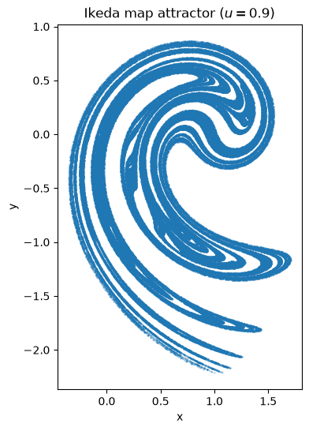
Practice Example 5: The Gingerbread Man Map#
The Gingerbread man map is an even simpler chaotic system, with no parameter to tune at all:
Despite being built from nothing but absolute value and subtraction, iterating it from almost any starting point traces out a fractal boundary that (depending on your imagination) resembles a gingerbread man, hence the name. As with the Ikeda map, we generate it by iterating the map many times and scatter-plotting every visited point.
def gingerbread_man_map(n_iter=20_000, x0=-0.1, y0=0.0):
x = np.empty(n_iter)
y = np.empty(n_iter)
x[0], y[0] = x0, y0
for n in range(n_iter - 1):
x[n + 1] = 1 - y[n] + abs(x[n]) # The single absolute value is what makes this map chaotic
y[n + 1] = x[n]
return x, y
x_gb, y_gb = gingerbread_man_map(n_iter=20_000)
fig, ax = plt.subplots(figsize=(6, 6))
ax.scatter(x_gb, y_gb, s=1, color="tab:green", alpha=0.5)
ax.set_title("Gingerbread man map")
ax.set_xlabel("x")
ax.set_ylabel("y")
ax.set_aspect("equal")
plt.show()
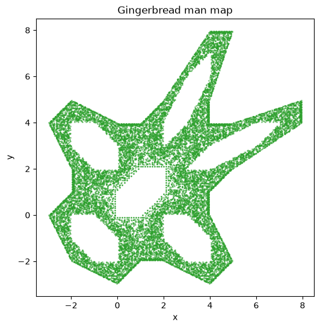
Practice Exercises#
Now it’s your turn. For each question, write your own code from scratch, don’t just copy a cell above.
Q1: A single customized plot#
Plot \(h(x) = x \cdot \sin(x)\) for \(x\) from \(-10\) to \(10\) using at least 500 points. Give the line a color and linewidth of your choice, add a title, x/y axis labels, and turn on the grid. Add a horizontal reference line at \(y=0\) using ax.axhline.
# TODO: your code for Q1 here
Q2: A 2x3 grid of panels#
Using plt.subplots(nrows=2, ncols=3, ...), plot six different transformations of \(x\) over \([0, 4\pi]\) in six panels: \(\sin(x)\), \(\sin(2x)\), \(\sin(3x)\), \(\cos(x)\), \(\cos(2x)\), \(\cos(3x)\). Give each panel its own title, and give the whole figure one shared title with fig.suptitle.
# TODO: your code for Q2 here
Q3: A contour plot with a well-chosen colormap#
Build a grid with np.meshgrid over \(x, y \in [-2, 2]\) and compute \(Z = X^3 - 3X + Y^2\). This function has both positive and negative values with a meaningful zero, so it calls for a diverging colormap. Plot it with ax.contourf, choosing a diverging colormap (e.g. "RdBu" or "coolwarm"), and use TwoSlopeNorm(vcenter=0) (see the colormaps section) so that zero maps to the center of the colormap. Add a colorbar.
# TODO: your code for Q3 here
Q4: Your own animated GIF#
Pick any function f(x, t) that depends on both x and a time-like parameter t (for example, a wave whose amplitude grows and shrinks: np.sin(x - t) * (1 + 0.5 * np.sin(t / 5))). Animate it over at least 60 frames and save it as a .gif using FuncAnimation and PillowWriter, following the pattern from Practice Example 3. Display the resulting GIF in the notebook with IPython.display.Image.
# TODO: your code for Q4 here
Q5: Exploring the Ikeda map’s parameter#
Reuse the ikeda_map function from Practice Example 4. Using plt.subplots(nrows=2, ncols=2, ...), plot the attractor for four different values of \(u\): 0.6, 0.7, 0.8, and 0.9, one value per panel (keep n_iter at 200,000 or more so each attractor is fully filled in). Give each panel a title showing its u value. In a short markdown cell below your plot, describe in a sentence or two how the shape of the attractor changes as u increases.
# TODO: your code for Q5 here
Q6: Design your own fractal#
Reuse the escape_time_fractal helper from Practice Example 2. Write your own get_next(z, p) function, it doesn’t have to be a polynomial; things like np.sin(z) + p, z**4 + p, or 1 / z**2 + p are all worth trying. Pick your own x_range/y_range (you may need to experiment to find a window where something interesting is visible) and a colormap of your choice. Plot the result, then in a short markdown cell below, note which get_next you tried and briefly describe the shape it produced.
# TODO: your code for Q6 here